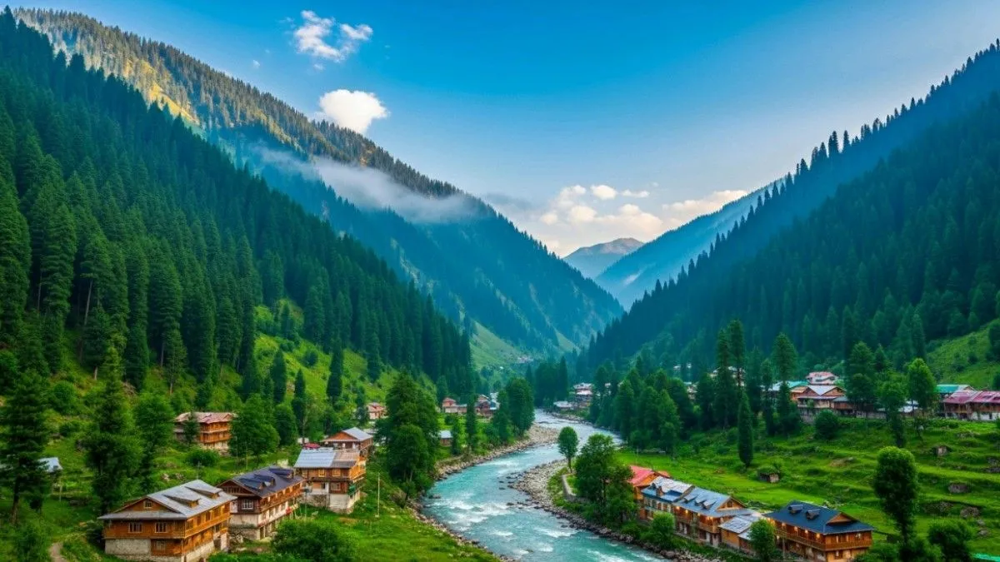

Azad Kashmir's crown jewel — the turquoise Neelum River stretches 200 km through dense forests, roaring waterfalls, and charming villages untouched by time.

Neelum Valley — named after the turquoise Neelum River — is the most scenic valley in Azad Jammu and Kashmir. It stretches approximately 200 km along the Neelum River, lined with dense forests, roaring waterfalls, and charming villages. The valley shares a border with Indian-administered Kashmir, with the river acting as a natural boundary.
The valley offers a serene, unhurried pace of life and some of the most beautiful natural scenery in Pakistan — lush green hills, mirror-clear streams, and traditional wooden homes nestled into the mountainsides.
The road to Neelum Valley from Muzaffarabad is scenic but narrow with sharp bends. A 4x4 vehicle is recommended. CNIC (ID card) is required for Pakistani nationals at checkpoints. The best way to explore is with our guided tour that handles all logistics.
Book your Neelum Valley tour package with us today and experience the untouched paradise of Azad Kashmir.